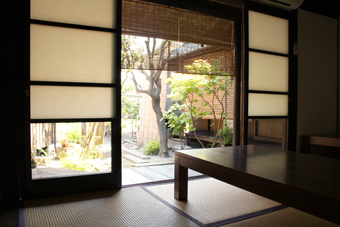

SHOP INFORMATION御膳房 指東
純和食が楽しめる趣きある古民家の日本料理店
 今回ご紹介する日本料理店「御膳房指東」は、築100年の古民家で、瀬戸内の旬の食材を使った四季折々の日本料理を堪能することができます。
今回ご紹介する日本料理店「御膳房指東」は、築100年の古民家で、瀬戸内の旬の食材を使った四季折々の日本料理を堪能することができます。
日本料理一筋の店主浦上秀生さんが、玉島や岡山の市場から厳選した食材を丹精込めて料理され、関西風の上品な薄味仕立て、細やかな気配りの盛り付けがされています。
瀬戸内の旬の食材を使った四季折々の料理
写真右はあじわいコース
先付：はもちりのからしみそ添え
前菜：もずく、真ダコのやわらか煮、イカの黄身焼、新ごぼうのきんぴら、がらえびのみじん粉揚げ、えだまめ、鮭の笹巻き寿司
お造り：鱸、縞鯵、剣先イカ、生ウニ
焚合せ：湯葉豆腐のオランダ煮
焼物：縞鯵、一寸豆の塩蒸し、酢どりみょうが
揚げ物：車海老のかもじあげ、ナス、ししとう、たまねぎ
旬の食材を使い、一品一品丁寧に作られています
お造りや焼物で使われている縞鯵は、瀬戸内の夏の旬。（縞鯵は小ぶりな鯵ではなく、大きいものでは4、5キロにもなり、平べったく鯛のような形をしています。）その他、アコウやスズキ、剣先イカなども夏の旬の味覚です。
焚合せの湯葉豆腐のオランダ煮は、豆腐を下味で炊いて水を切ったものを細かく砕き、卵などのつなぎを入れた中に刻んだ生湯葉を入れ、流しかんで蒸した後に油で揚げ、さらに出汁で炊くという手の込んだ調理法で作られます。とろけるような食感が特徴です。
昼、夜共に豊富な御膳が揃います
昼メニューは、季節の色々な食材を一品ずつ器に盛り込んだ看板メニューの「昼膳」（1,800円）や 天ぷら、煮魚、刺身を主としたお膳・丼（950～1,200円）が揃います。夜は手軽なお値段の「指東膳」（3,670円）、先付・前菜・お造り・焚合せ・焼物・揚げ物・吸物・ご飯・香の物・フルーツの10品が並ぶ指東の料理が堪能出来る「おもてなしコース」（5,250円）や「あじわいコース」（6,300円）の他、一品料理も用意されています。また、指東膳は予約をすれば昼でも楽しめます。予算に応じてコースを組んでもらうことも出来ます。
「御膳房指東」の場所と店内の様子

倉敷駅から徒歩約7分、センター街のアーケードを十字に交差した道沿いにあります。「センター街」「えびす通商店街」まで1分の便利な場所です。
築100年の古民家を活かした建物に緑の暖簾が趣があります。
玄関を入ると、テーブル4名席2、2名席2の12席あり、玄関入って左手には座敷「小上がりの間」4名程度、奥に籐のカーペットを敷き詰めた座敷「籐の間」6名～8名程度、一番奥の庭に面した座敷「奥の間」4名～6名程度です。
※座敷の利用は、5,250円以上の料理・4名以上での予約の方が優先となっています、またお部屋の指定はできません。
Googleマップでみる
一覧に戻る